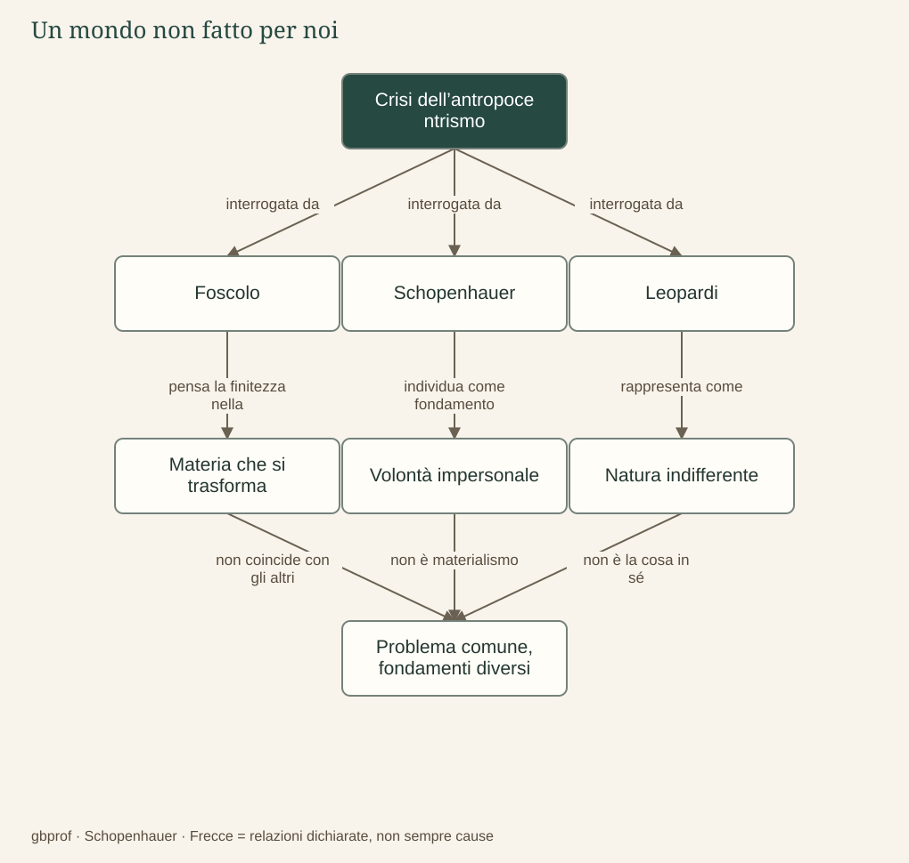

B · Schopenhauer e la letteratura · 01
Il mondo è fatto per l’uomo?
Che cosa resta quando l’universo non garantisce la nostra felicità?
Prima di accostare gli autori dobbiamo precisare che cosa stiamo confrontando. Foscolo, Schopenhauer e Leopardi non condividono un unico sistema e non affrontano il problema nello stesso linguaggio: un carme, un trattato filosofico e un dialogo letterario producono conoscenza con strumenti differenti. Possiamo però seguirli davanti a una frattura comune, intesa come chiave interpretativa: la perdita della garanzia che il mondo sia ordinato dalla Provvidenza per il bene dell’uomo. La somiglianza riguarda il problema, mentre le risposte devono essere ricostruite separatamente.
Foscolo: materia, trasformazione e durata umana
Nell’immagine del mondo foscoliana l’essere umano appartiene a una natura materiale, sottoposta al tempo e alla trasformazione. La morte dissolve l’individuo e non offre una certezza ultraterrena alla quale affidare il valore degli affetti. L’inizio dei Sepolcri porta questo problema dentro una domanda concreta: la tomba rende davvero meno dura la morte per chi non sente più? La risposta sul piano materiale è negativa, ma non chiude il ragionamento del carme.
La materia che si trasforma non conserva automaticamente il significato umano di una vita. Proprio per questo il problema della memoria diventa decisivo: le leggi naturali non custodiscono da sole la giustizia, l’amore o l’esempio civile. Foscolo non deduce dal materialismo che tali valori siano inutili; domanda come possano essere costruiti e trasmessi dagli esseri umani. Questa direzione separa già la sua ricerca da una liberazione ottenuta spegnendo il desiderio.
Schopenhauer: un fondamento che non è la materia
Anche Schopenhauer toglie alla felicità umana la garanzia di un disegno provvidenziale, ma non identifica il fondamento del mondo con la materia. La materia appartiene alla rappresentazione e alle sue forme; la Volontà è il nome dell’essenza metafisica che il filosofo riconosce attraverso l’esperienza interna del corpo. Non è dunque corretto collocarlo nella medesima casella del materialismo foscoliano solo perché entrambi criticano una consolazione provvidenziale.
La Volontà non progetta l’universo e non desidera coscientemente il male dell’uomo. I fini particolari degli organismi e delle persone non compongono una destinazione ultima nella quale ogni sofferenza acquisti necessariamente un senso. Il mondo non è il nemico personale dell’umanità: il conflitto nasce dalla manifestazione di un tendere impersonale che, negli individui, si contrappone a se stesso.
Leopardi: la domanda dell’Islandese
Nel Dialogo della Natura e di un Islandese la Natura prende parola e respinge l’idea che le sue operazioni siano rivolte alla felicità o all’infelicità degli uomini. Il personaggio cerca un luogo nel quale vivere senza arrecare né ricevere danno, ma scopre che nessun clima lo sottrae al patire. La produzione e la distruzione continuano senza offrire una risposta morale alla domanda sul loro vantaggio.
La personificazione non dimostra che Leopardi creda in una gigantesca coscienza naturale. Il dialogo rende visibile lo scontro fra una richiesta umana di giustizia e un ordine che non ragiona secondo quella richiesta. Il doppio finale — l’Islandese divorato dai leoni oppure sepolto dal vento e trasformato in mummia — impedisce che il lettore riceva una pacificazione conclusiva. La domanda viene interrotta dalla stessa natura della quale chiedeva ragione.
La convergenza e il limite del confronto
Il punto comune più solido è il crollo dell’antropocentrismo provvidenziale, non l’identità fra Natura e Volontà. Leopardi ragiona sulla condizione dei viventi dentro una natura materiale; Schopenhauer propone una metafisica della cosa in sé; Foscolo esplora la possibilità di costruire durata affettiva e civile dentro la finitezza. La metafora della macchina, presente nel percorso didattico già disponibile, aiuta a comprendere l’impersonalità, ma non deve cancellare queste differenze.
Per il futuro confronto con Verga possiamo predisporre una domanda ulteriore: che cosa accade quando l’impersonalità viene rappresentata nei rapporti economici e sociali? Sarà una traccia da verificare nei testi, non l’attribuzione a Verga della metafisica schopenhaueriana. Il suo posto rimane qui segnalato come lavoro futuro, senza una PWA o un collegamento d’autore inesistenti.
Il problema in un’immagine
Dopo la lettura
Mappa di sintesi


Leggi la mappa in forma testuale
- Crisi dell’antropocentrismo interrogata da Foscolo.
- Crisi dell’antropocentrismo interrogata da Schopenhauer.
- Crisi dell’antropocentrismo interrogata da Leopardi.
- Foscolo pensa la finitezza nella Materia che si trasforma.
- Schopenhauer individua come fondamento Volontà impersonale.
- Leopardi rappresenta come Natura indifferente.
- Materia che si trasforma non coincide con gli altri Problema comune, fondamenti diversi.
- Volontà impersonale non è materialismo Problema comune, fondamenti diversi.
- Natura indifferente non è la cosa in sé Problema comune, fondamenti diversi.
Fermati sul problema
Che cosa mostra la Natura che parla nel Dialogo dell’Islandese?
Confronta il tuo ragionamento
Una personificazione che mette in scena la distanza fra domanda umana e ordine naturale. La voce letteraria non va trasformata automaticamente in una dottrina sulla coscienza della natura.